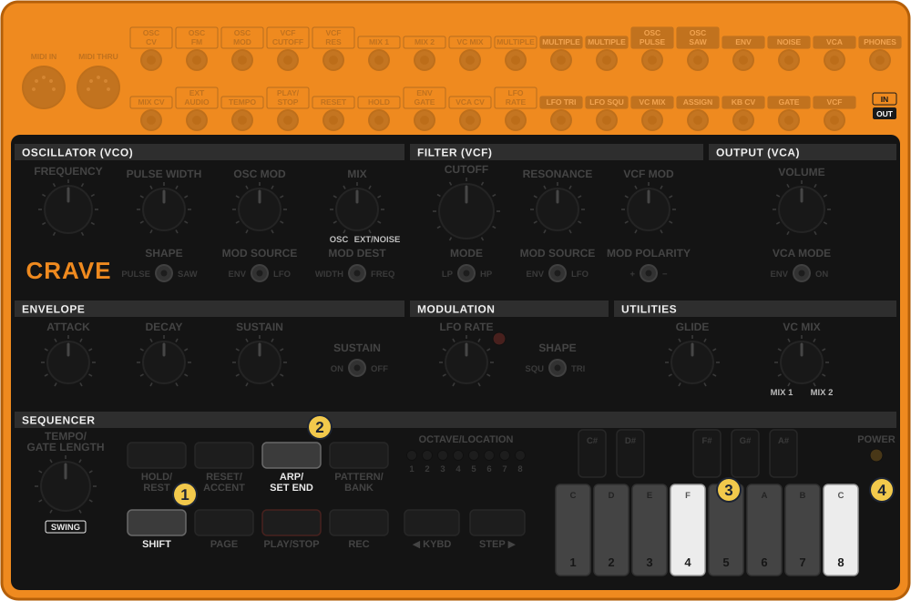
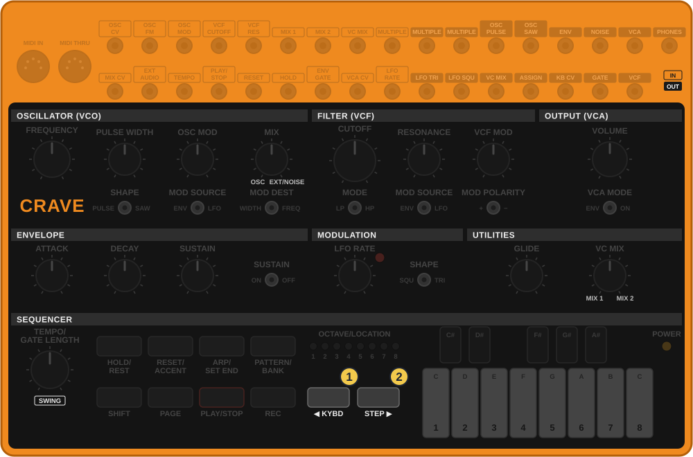
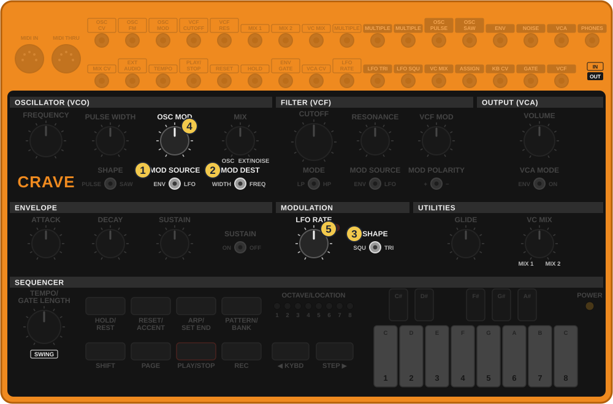
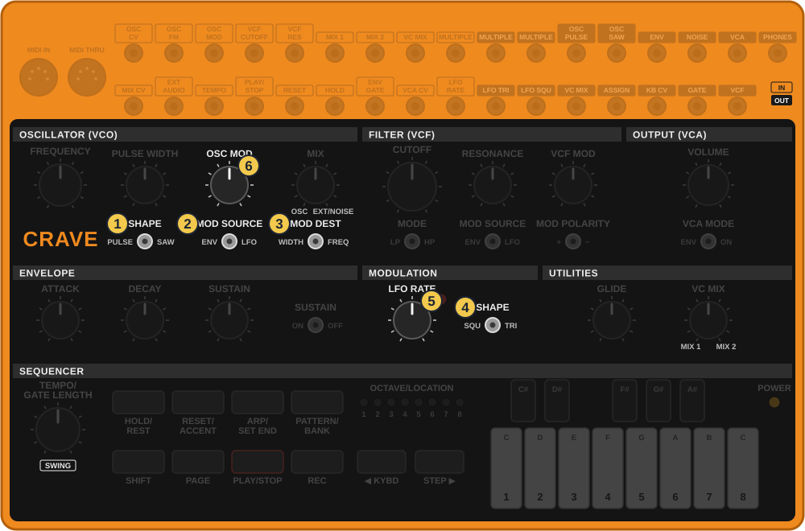
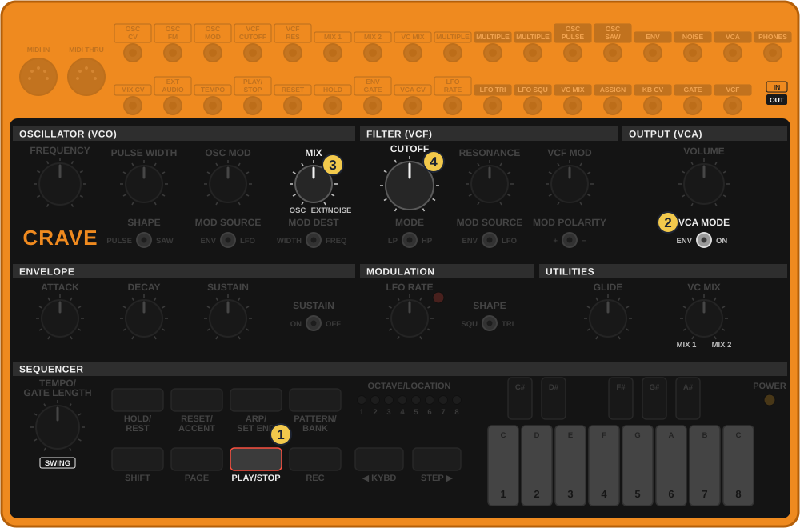
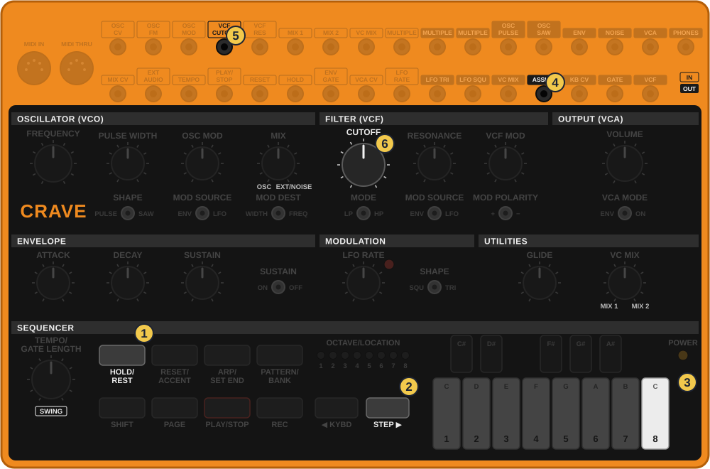
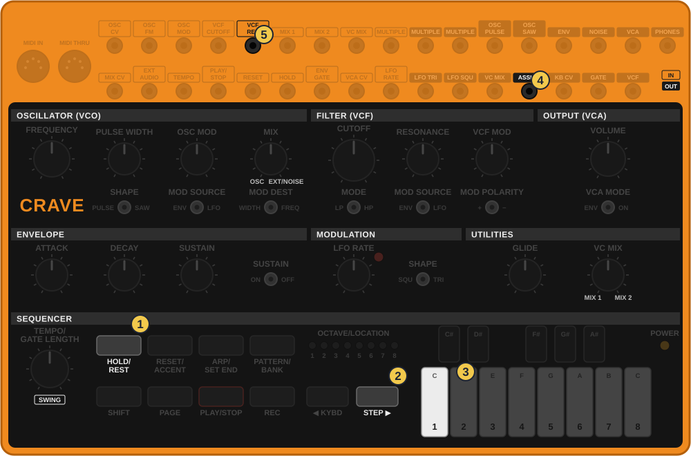
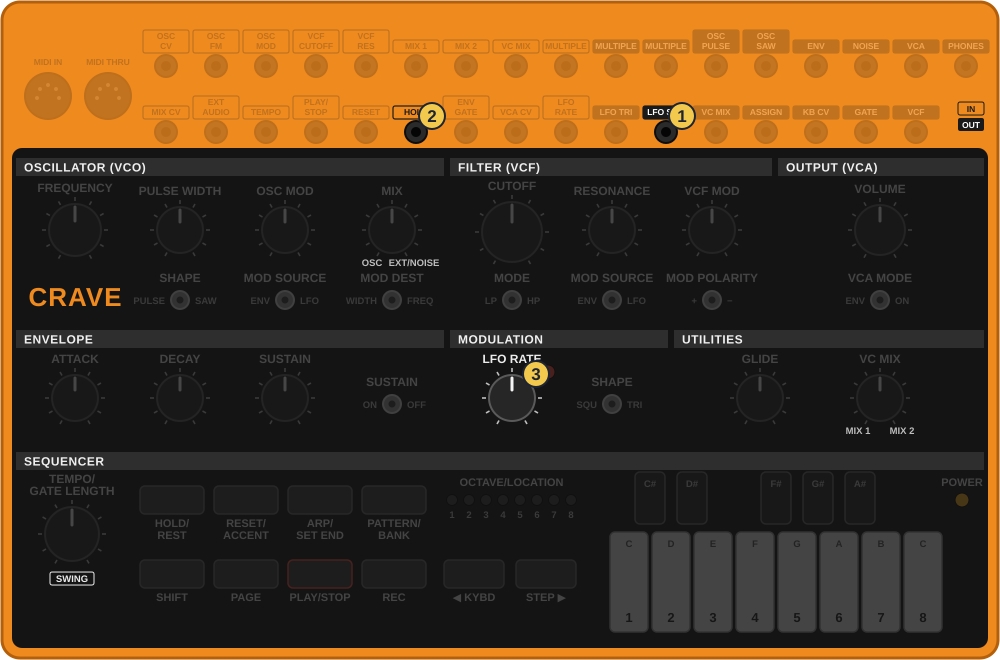

איך משתמשים
- נקודת הבסיס: הרצף שלך מנגן, והצליל של האסיד. כל טריק שמשנה משהו נגמר ב״חזרה״ לשם.
- לפני ניסוי ששווה לשמור: צלם את הפאנל. הקרייב לא שומר כפתורים.
- הסימנים: ✋החזק 👆לחץ ⟳סובב 🖐שחרר.
טריקים קצרים לתוך הג׳אם, רק לקרייב: מה עושים בידיים כשהקו רץ, צלילים שלא היו בשיעורים, וכבל אחד שמשנה הכל. כל כרטיס: מה זה, למה, ואיך. פותחים, מנסים, וממשיכים לנגן. טריקים חדשים שתביא נכנסים לכאן.
הקו עצמו לא צריך להשתנות כדי שהג׳אם יתפתח. מספיק לשנות כמה ממנו נשמע, באיזה גובה, ומתי הוא חוזר. כל הטריקים כאן זמניים: הרצף השמור לא נפגע.

תרשים מצויר לפי צילום של הקרייב והמדריך הרשמי, לא צילום
אפשר לגעת בתמונה כדי להגדיל.
מה זה: באמצע הג׳אם הקו נגמר בצעד 4 וחוזר שוב ושוב, ואז חוזר לאורך המלא.
למה: חצי קו שחוזר על עצמו בונה מתח, כמו לפני דרופ. כשהוא חוזר לשמונה, זה מרגיש כמו שחרור.
🔁 עובד עם: כל אורך. 3 או 5 מעל תופים של 16 נותנים קו שזז כל פעם למקום אחר.

תרשים מצויר לפי צילום של הקרייב והמדריך הרשמי, לא צילום
אפשר לגעת בתמונה כדי להגדיל.
מה זה: בשבירה, כל הקו יורד אוקטבה. בדרופ, הוא קופץ חזרה.
למה: הקו נשמע מאיים ושקט למטה, והקפיצה למעלה מרגישה כמו פיצוץ, בלי לגעת בתו אחד.

תרשים מצויר לפי צילום של הקרייב והמדריך הרשמי, לא צילום
אפשר לגעת בתמונה כדי להגדיל.
מה זה: כל תו קופץ מהר בינו לבין תו גבוה יותר, כמו טריל.
למה: קו של שני תווים נשמע פתאום כמו ארפג׳יו של טרנס.

תרשים מצויר לפי צילום של הקרייב והמדריך הרשמי, לא צילום
אפשר לגעת בתמונה כדי להגדיל.
מה זה: הצליל מתנפח ומתכווץ לאט, כמו מקהלה.
למה: קו של סינתי אחד נשמע רחב ועשיר, כמו כמה כלים. טוב במיוחד בתווים ארוכים.

תרשים מצויר לפי צילום של הקרייב והמדריך הרשמי, לא צילום
אפשר לגעת בתמונה כדי להגדיל.
מה זה: נשיפה של רעש שעולה ונפתחת, ונעלמת בדרופ.
למה: ככה בונים מתח בלי עוד מכשיר. 🔍 לבדוק: אם הקרייב לא מסונכרן, ה־PLAY/STOP צריך להיות מדויק על הפעמה.
השקע ASSIGN הוא היציאה הכי שווה: בוחרים בהגדרות מה יוצא ממנו. ערך 1 הוא ההדגשות, וערך 8 הוא מספר אקראי חדש בכל צעד. את הבחירה עושים פעם אחת, והיא נשמרת.

תרשים מצויר לפי צילום של הקרייב והמדריך הרשמי, לא צילום
אפשר לגעת בתמונה כדי להגדיל.
מה זה: כל צעד נפתח קצת אחרת, ואף פעם לא בדיוק אותו דבר.
למה: זה ״ג׳אם שמתפתח לבד״: אותו קו, וכל סיבוב נשמע חדש.

תרשים מצויר לפי צילום של הקרייב והמדריך הרשמי, לא צילום
אפשר לגעת בתמונה כדי להגדיל.
מה זה: בצעדים המודגשים המסנן גם שורק, כמו ההדגשה של 303.
למה: ההדגשות בקרייב בדרך כלל רק מחזקות. עם הכבל, הן משנות גם צבע. ״הכל מודגש״ בזמן נגינה הופך לצעקה של כל הקו.

תרשים מצויר לפי צילום של הקרייב והמדריך הרשמי, לא צילום
אפשר לגעת בתמונה כדי להגדיל.
מה זה: הקו נתקע לרגע על צעד, משתחרר, ונתקע שוב, בקצב של ה־LFO.
למה: גליץ׳ חי, בלי לגעת בכלום. ה־LFO הריבועי ״למעלה״ חצי מהזמן, ולכן הקו קפוא בערך חצי מהזמן. 🔍 לבדוק שהשקע מקפיא כל עוד יש בו מתח, כמו החזקה של HOLD/REST.